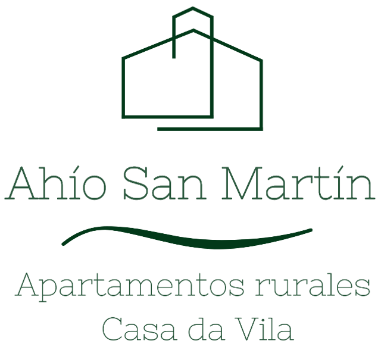

Esta página se ha perdido en la niebla
La que buscas no existe o ha cambiado de sitio. El edificio sigue donde estaba: en La Villa, San Martín de Oscos.
Ver fechas Volver a la portada
La que buscas no existe o ha cambiado de sitio. El edificio sigue donde estaba: en La Villa, San Martín de Oscos.
Ver fechas Volver a la portada